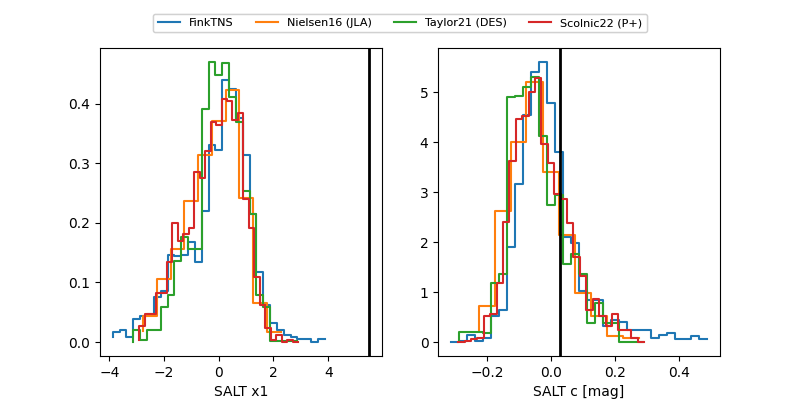

FINK: ZTF25aborone
Lasair: ZTF25aborone
ALeRCE: ZTF25aborone
ZTF25aborone (ztf,fink)
equatorial (ra, dec) = (18.9887,-8.37853)
galactic (l, b) = (141.2610,-70.37287)

last ztfg=20.48, ztfr=20.36
2 ztfg, 4 ztfr detections